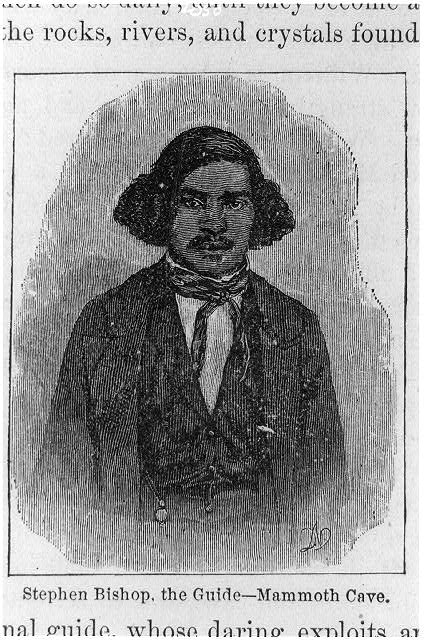

Stephen Bishop (c. 1821–1857) was a mixed race slave (freed by manumission in the year before his death) famous for being one of the lead explorers and guides to the Mammoth Cave in the U.S. state of Kentucky. Bishop was introduced to Mammoth Cave in 1838 by the man who enslaved him, Franklin Gorin (1798–1877),[1] who purchased the cave from the previous owners in the spring of 1838. Gorin wrote, after Bishop's death:
I placed a guide in the cave – the celebrated and great Stephen, and he aided in making the discoveries. He was the first person who ever crossed the Bottomless Pit, and he, myself and another person whose name I have forgotten were the only persons ever at the bottom of Gorin's Dome to my knowledge.
